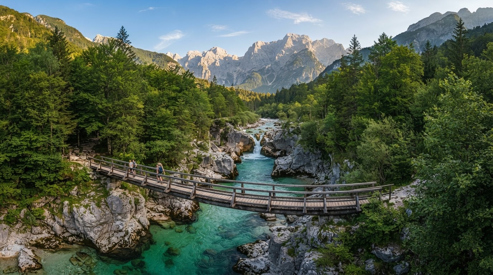
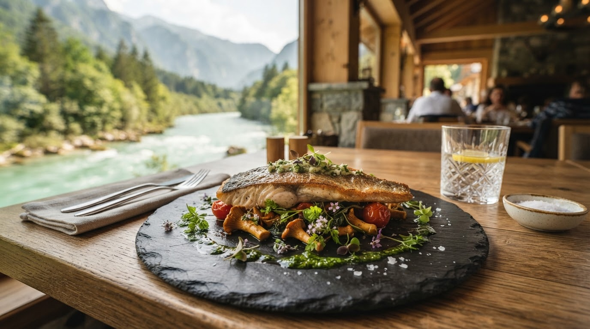
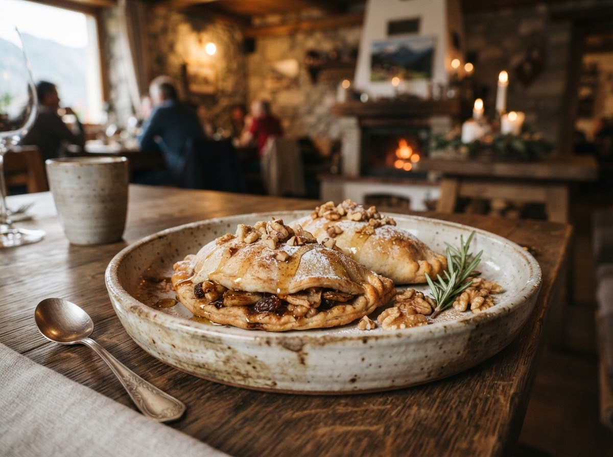

Domača kuhinja ob smaragdni Soči
Soška postrv, frika, bovški krafi in kobariški štruklji. Kuhamo po receptih naše none iz tega, kar zraste v dolini, in jedi postrežemo na terasi tik nad reko.

Tri generacije ob brvi čez Sočo
Nona Marija je leta 1962 v hiši ob brvi začela kuhati za drvarje in planince. Danes v kuhinji stoji njen vnuk Luka, goste pa sprejema Ana. Kuhamo preprosto in po sezoni: postrv pride zjutraj, sir s planin, jurčke naberemo sami. Kar ni iz naše doline, je iz sosednje.
Postrv iz doline
Vsako jutro jo dobimo iz bližnje ribogojnice. Spečemo jo celo na maslu ali jo podimimo sami.
Sir s planin
Tolminc iz kravjega in bovški sir iz ovčjega mleka, od sirarjev s planin nad dolino.
Vina iz Brd in Vipave
Rebula in merlot iz Brd, zelen in pinela iz Vipavske doline. Hišno vino točimo tudi na kozarec.
Naša menija
Menija se menjata s sezono. Vsak dan kuhamo tudi jedi po izbiri, ki so napisane na tabli pri vhodu.
Soški meni
+ 18 € z vinsko spremljavoVse, kar dajeta Soča in njeni bregovi, od postrvi do gozdnih gob.
- Predjed: dimljena postrv s hrenom in kislim jabolkom
- Juha: gobova juha z jurčki in ajdovo kašo
- Glavna jed: cela soška postrv na maslu z žajbljem, krompir z blitvo
- Sladica: kobariški štruklji z orehovim nadevom

Nonin meni
+ 18 € z vinsko spremljavoJedi, ki jih pri nas kuhamo že tri generacije, po receptih none Marije.
- Predjed: plošča s planine (tolminc, bovški sir, domača salama in zaseka)
- Juha: ričet s prekajenim rebrcem
- Glavna jed: srnin golaž s polento
- Sladica: bovški krafi s suhimi hruškami, orehi in rozinami, zabeljeni z maslom
Kje boste sedeli
Poleti sedimo na terasi nad reko, v hladnejših dneh ob kaminu, večje družbe pa za dolgo mizo ob kuhinji.
Terasa nad Sočo
Mize stojijo tik nad reko s pogledom na brv in Krn. Terasa je odprta od maja do oktobra ob lepem vremenu.
Stara hiša s kaminom
Kamniti zidovi, macesnov strop in kamin, v katerem gorijo bukova drva. Tu je prijetno, ko se zvečer ohladi.
Dolga miza ob kuhinji
Za družine in družbe. Luka vam pove, kaj je danes v loncih, in jedi prinese kar iz kuhinje.
Rezervirajte mizo
Ob koncih tedna in poleti na terasi so mize hitro zasedene, zato priporočamo rezervacijo nekaj dni vnaprej.
Kako do nas
Parkirate lahko tik ob gostilni.
Pokrito stojalo za kolesa. Po raftingu ali pohodu pridite kar v športni opremi.
Na terasi jim prinesemo skledo vode.
Krst, obhajilo, rojstni dan ali obletnica? Za skupine do 60 oseb pripravimo meni po dogovoru. Pokličite Ano.